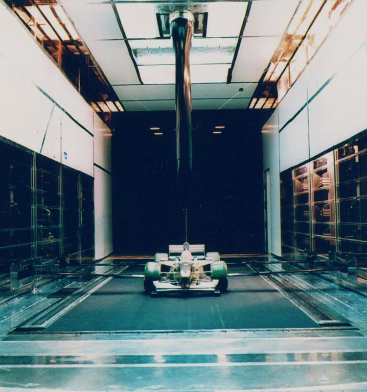

La tecnologia Ferrari
La tecnologia è una parte fondamentale della filosofia Ferrari.
Ferrari utilizza soluzioni tecnologiche avanzate per migliorare le prestazioni, la sicurezza, l'efficienza e il piacere di guida.
Molte tecnologie vengono sviluppate grazie all'esperienza maturata nel mondo delle competizioni.
Tecnologia e innovazione sono elementi fondamentali per Ferrari.
Il motore Ferrari

Il motore è uno degli elementi più importanti delle automobili Ferrari.
Ferrari ha una lunga tradizione nella produzione di motori ad alte prestazioni.
I motori Ferrari sono progettati per offrire potenza, velocità e un'esperienza di guida sportiva.
Nel corso degli anni sono state sviluppate diverse soluzioni tecniche per migliorare l'efficienza e le prestazioni.
Scopri di più sul motore
La ricerca sui motori permette di migliorare continuamente prestazioni ed efficienza.
L'aerodinamica

L'aerodinamica studia il comportamento dell'aria intorno all'automobile.
Ferrari utilizza soluzioni aerodinamiche avanzate per aumentare la stabilità della vettura.
Una buona aerodinamica permette di migliorare la velocità, la stabilità e la sicurezza.
Le conoscenze sviluppate in Formula 1 vengono utilizzate anche nello sviluppo delle automobili stradali.
La tecnologia ibrida

Ferrari ha iniziato a utilizzare anche tecnologie ibride nelle proprie automobili.
Un sistema ibrido combina un motore tradizionale con uno o più motori elettrici.
Questa tecnologia permette di ottenere prestazioni elevate e allo stesso tempo migliorare l'efficienza.
La tecnologia ibrida rappresenta una parte importante del futuro dell'automobile.
Come funziona un sistema ibrido?
Il motore a combustione e il sistema elettrico possono lavorare insieme per migliorare prestazioni ed efficienza.
I freni
I freni sono fondamentali per la sicurezza e per le prestazioni di una Ferrari.
Le automobili sportive devono essere in grado di frenare rapidamente anche ad alte velocità.
Ferrari utilizza sistemi frenanti progettati per offrire elevate prestazioni.
- Elevata potenza frenante
- Resistenza alle alte temperature
- Controllo elettronico
- Materiali ad alte prestazioni
- Maggiore sicurezza
I sistemi frenanti moderni permettono al pilota di controllare meglio la vettura.
Elettronica e sistemi moderni
L'elettronica svolge un ruolo sempre più importante nelle automobili moderne.
Ferrari utilizza diversi sistemi elettronici per controllare e monitorare la vettura.
- Sistemi di controllo del motore
- Controllo della trazione
- Sistemi di sicurezza
- Controllo elettronico della vettura
- Sistemi multimediali
- Strumentazione digitale
Questi sistemi permettono di migliorare il controllo, la sicurezza e il comfort.
Materiali leggeri
Per ottenere elevate prestazioni Ferrari utilizza materiali leggeri e resistenti.
Ridurre il peso dell'automobile permette di migliorare accelerazione, frenata e comportamento in curva.
Tra i materiali utilizzati nelle automobili sportive troviamo materiali compositi e fibra di carbonio.
Ridurre il peso significa migliorare le prestazioni della vettura.
La tecnologia e la Formula 1
La Formula 1 rappresenta un laboratorio tecnologico molto importante per Ferrari.
Durante le competizioni gli ingegneri studiano continuamente nuove soluzioni per migliorare le prestazioni della monoposto.
Le conoscenze sviluppate in Formula 1 possono contribuire anche alla progettazione delle automobili stradali.
La Formula 1 permette di sviluppare nuove tecnologie e nuove soluzioni.
Perché la Formula 1 è importante?
Le competizioni permettono agli ingegneri di testare e sviluppare nuove tecnologie in condizioni estreme.
Curiosità sulla tecnologia Ferrari
- Ferrari utilizza tecnologie sviluppate anche nel mondo delle competizioni.
- L'aerodinamica è fondamentale per le prestazioni delle automobili sportive.
- I sistemi ibridi combinano motore tradizionale e tecnologia elettrica.
- I materiali leggeri permettono di ridurre il peso della vettura.
- L'elettronica permette di controllare numerosi sistemi dell'automobile.
Conclusione
La tecnologia è una parte fondamentale della storia e del futuro Ferrari.
Motori, aerodinamica, elettronica, materiali leggeri e sistemi ibridi permettono di creare automobili sempre più performanti.
Ferrari continua a combinare tradizione, innovazione e prestazioni.
- La tecnologia Ferrari continua a evolversi.